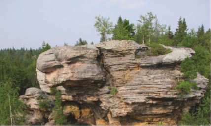
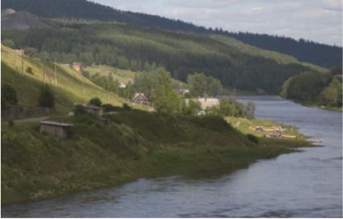
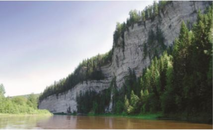

Растительный покров долины Усьвы представляет собой южно-таежные
предгорные леса. Вследствие крутых склонов коренных берегов, создающих неудобство для рубки,
соблюдения водоохранной зоны, особого режима охраны на многочисленных памятниках природы, в
долине еще остались нетронутые леса с величавыми старыми деревьями. Основные лесообразующие
породы Усьвинских лесов: ель, пихта, сосна, береза, осина, постоянно встречается примесь
кедра (сосны сибирской). Особая и богатая флора травянистых растений развита на скальных
обнажениях, многие скальные виды занесены в Красные книги. Рыбное население Усьвы типичное
для рек Пермского края, к массовым видам относятся гольян речной, европейский хариус,
уклейка, щука, окунь.

Автодорога от поселка Шумихинский спускается к Усьве по долине
ручья Горелый, и выходит на большую поляну на правом берегу, здесь есть четыре большие
стоянки. В 300 м выше стоянок, на том же берегу стоит здание водокачки, а за ним интересные и
красивые песчаниковые скалы. На этих скалах и в башне водокачки были отсняты некоторые кадры
из кинофильма «Географ глобус пропил», созданного по мотивам одноименной книги известного
пермского писателя Алексея Иванова. В фильме показана закрепленная на этих скалах табличка в
память о погибших туристах. На самом деле такой таблички нет, ее повесили только на время
съемок.

На самом деле никакого порога под столбами нет, он в фильме
вписан в ландшафт компьютерными средствами. Впереди за поворотом угадывается следующий
каменный массив – Навислый. И все это купается в океане зеленой тайги. В русле реки возле
столбов есть два острова – один в верхней части массива, другой – в нижней. Нижний остров
большой – почти 500 м длиной, его лучше обходить по правой протоке. После Усьвинских столбов
на протяжении восьми километров, как величественные корабли один за другим выплывают из-за
поворотов камни: Навислый, Малое Бревно, Большое Бревно, Панорамный. И замыкают парад
усьвинских гигантов скальные массивы Стрельного и Омутного. Русло реки продолжает извиваться,
по пути встречаются острова, течение спокойное, не более 0,5 м/с.